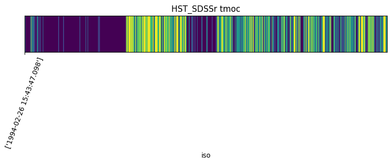
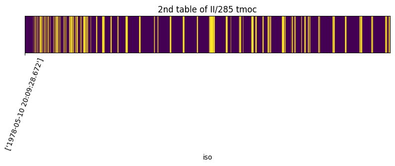
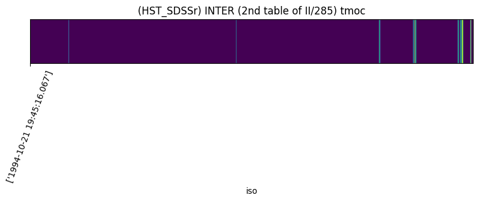
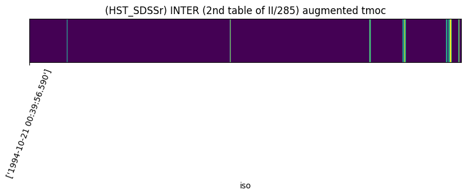
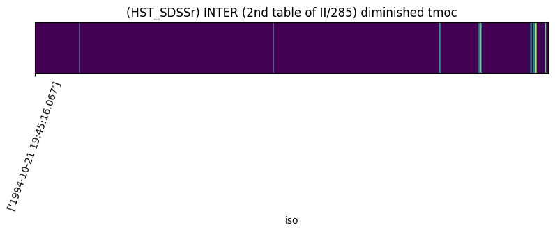
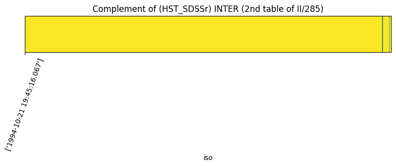

Creation and manipulation of time coverages (TMOCs)¶
First import the relevant packages, we will need the TimeMOC class of mocpy and astropy Time/TimeDelta:
[2]:
from astropy.time import Time, TimeDelta
from astroquery.vizier import Vizier
from mocpy import TimeMOC
Loading a time coverage (TMOC)¶
From a FITS file:
[3]:
time_moc = TimeMOC.from_fits(
"http://alasky.u-strasbg.fr/HST-hips/filter_SDSSr_hips/TMoc.fits",
)
# Display it
time_moc.plot(title="HST_SDSSr tmoc")

From an astropy table:
[4]:
viz = Vizier(columns=["*", "_RAJ2000", "_DEJ2000"])
viz.ROW_LIMIT = -1
table = viz.get_catalogs("II/285")[1]
print(table)
Name Ref JD Vmag U-B B-V V-Rc Rc-Ic V-Ic
d mag mag mag mag mag mag
------ --- ------------ ------ --- ------ ------ ----- ------
T ANT 978 2443914.3750 -- -- 0.802 0.391 -- 0.856
T ANT 978 2443915.4410 -- -- 0.861 0.460 -- 0.803
T ANT 978 2444297.4250 9.360 -- 0.791 0.431 -- 0.840
... ... ... ... ... ... ... ... ...
NN VUL 950 2445211.2031 14.186 -- 1.528 -- -- --
NN VUL 950 2445212.2304 14.227 -- 1.588 -- -- --
NN VUL 950 2445213.2109 14.293 -- 1.574 -- -- --
NN VUL 950 2445214.2109 14.408 -- 1.524 -- -- --
Length = 70031 rows
[5]:
%%time
table_moc = TimeMOC.from_times(Time(table["JD"], format="jd", scale="tdb"))
table_moc.plot(title="2nd table of II/285 tmoc")
# print characteristics such as the time of the first/last observations
print("Time of the first observation:", table_moc.min_time.iso)
print("Time of the last observation:", table_moc.max_time.iso)
# the total duration of the observation times
print(f"Total duration: {table_moc.total_duration.jd} jd")
# the order of the TimeMoc
print("max order:", table_moc.max_order)

Time of the first observation: ['1978-05-10 20:09:28.672']
Time of the last observation: ['2004-04-22 16:56:36.350']
Total duration: 227.42448355555555 jd
max order: 31
CPU times: user 183 ms, sys: 6.4 ms, total: 189 ms
Wall time: 137 ms
Filtering an astropy table with a TimeMoc¶
[6]:
# filtering the table through the tmoc created from the HST_SDSSr fits file
rows = time_moc.contains_with_timeresolution(
times=Time(table["JD"], format="jd", scale="tdb"),
keep_inside=True,
delta_t=TimeDelta(3600, format="sec", scale="tdb"),
)
print(table["JD"][rows])
JD
d
------------
2453021.3273
2453022.4863
2453022.5731
...
2453022.3294
2453022.4841
2453022.5714
2453022.4899
Length = 233 rows
Operation between TMOCs¶
Let’s intersect the two coverages we already have i.e. the one from HST_SDSSr with the one we got from VizieR:
[7]:
result = table_moc.intersection_with_timeresolution(
time_moc,
delta_t=TimeMOC.order_to_time_resolution(25),
)
time_moc.plot(title="HST_SDSSr tmoc")
table_moc.plot(title="2nd table of II/285 tmoc")
result.plot(title="(HST_SDSSr) INTER (2nd table of II/285) tmoc")
# print the max order of all the tmocs. Result tmoc must be of order 9
print("HST_SDSSr max order : ", time_moc.max_order)
print("2nd table of II/285 max order : ", table_moc.max_order)
print("(HST_SDSSr) INTER (2nd table of II/285) max order : ", result.max_order)



HST_SDSSr max order : 41
2nd table of II/285 max order : 31
(HST_SDSSr) INTER (2nd table of II/285) max order : 25
We can augment and/or diminish a time coverage. This may be useful to see if surveys, even if not coinciding perfectly, may have been done at very close observational times.
[8]:
result.add_neighbours()
result.plot(title="(HST_SDSSr) INTER (2nd table of II/285) augmented tmoc")
result.remove_neighbours()
result.plot(title="(HST_SDSSr) INTER (2nd table of II/285) diminished tmoc")


Complement of a TimeMoc
[9]:
complemented_tmoc = result.complement()
complemented_tmoc.plot(
title="Complement of (HST_SDSSr) INTER (2nd table of II/285)",
view=(result.min_time, result.max_time),
)
